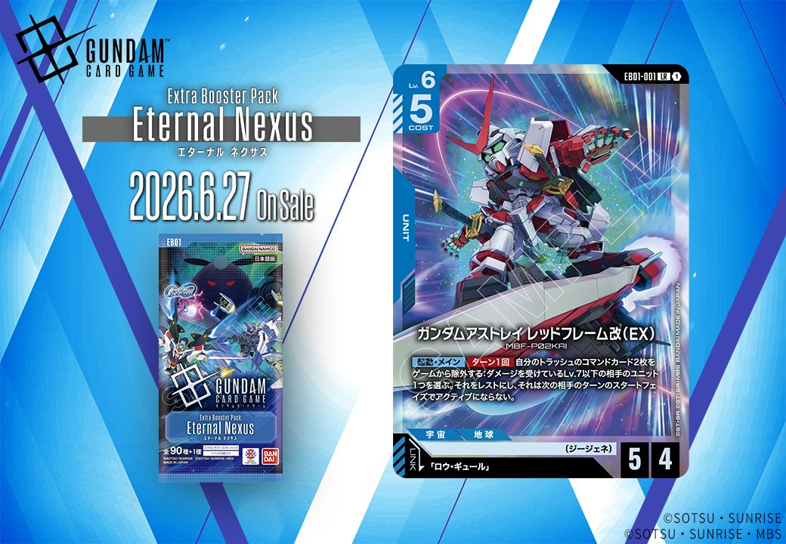
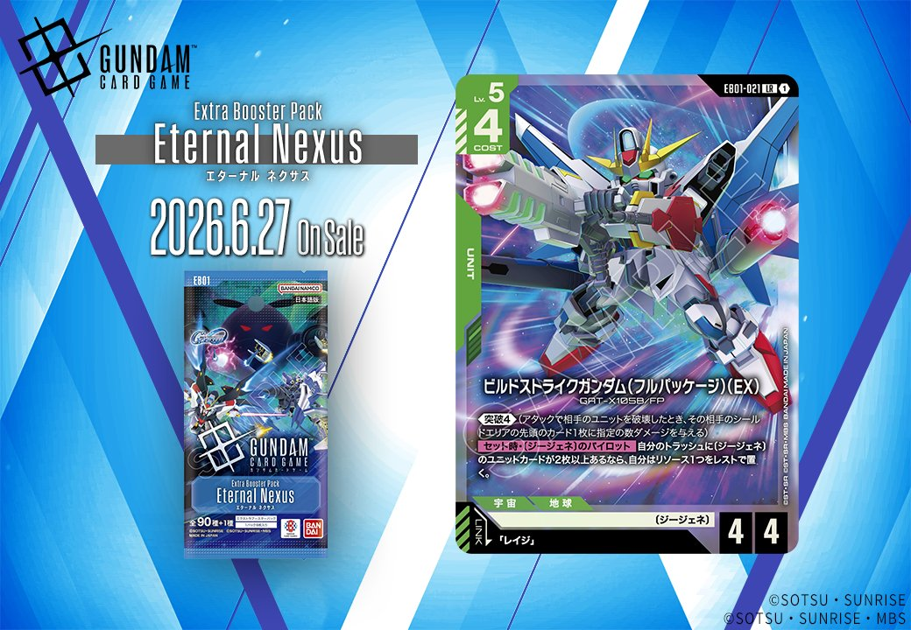
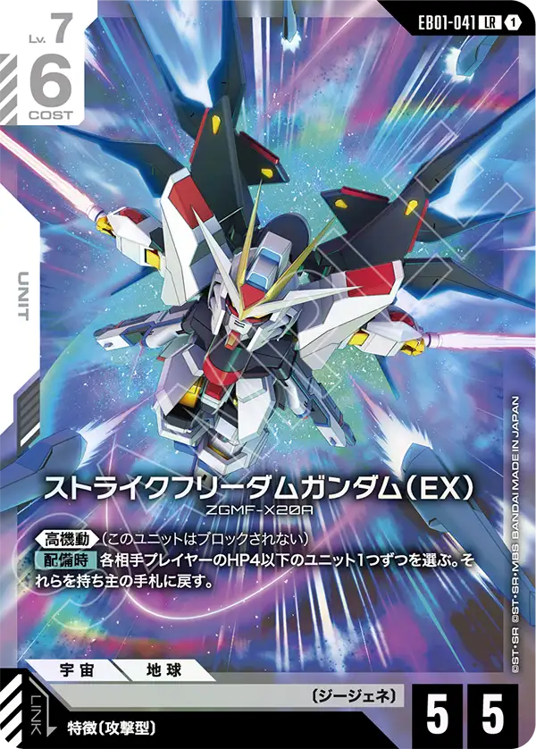

EB01「Eternal Nexus」LR全6種 徹底考察
最高レアリティ LR を1枚ずつ — 効果の読み解きと〔ジージェネ〕デッキでのシナジー
ブースターパック「Eternal Nexus [EB01]」は、アプリゲーム『SDガンダム ジージェネレーション エターナル』とのコラボ商品です。収録カードの大半が〔ジージェネ〕の特徴を持ち、特徴を参照し合うことでシナジーが生まれる設計になっています。本記事では、その最高レアリティである LR（レジェンドレア）全6種 を1枚ずつ取り上げ、効果の意味（初心者向け）と、〔ジージェネ〕デッキでどう活きるか（競技視点）の両面から考察します。
※ 効果テキスト・ステータスは公式カード画像と照合済みです。考察は記事公開時点の見解であり、実際のカードプール・大会環境により評価は変わります。

画像をタップで拡大
ガンダムアストレイ レッドフレーム改（EX）
MBF-P02KAI ／ 出典：SDガンダム ジージェネレーション エターナル
初心者向け効果の意味
自分のメインフェイズに、トラッシュ（捨て札）にあるコマンドカードを2枚ゲームから除外することで起動できる能力です。発動すると、すでにダメージを受けているLv.7以下の相手ユニット1つをレスト（横向き＝行動不能の状態）にし、しかも相手は次のターンの開始時にそれを起こせません。つまり、弱った相手のユニットを2ターンにわたって機能停止させられます。「ターン1回」なので、1ターンに使えるのは1回までです。
競技視点評価とねらい
レスト拘束は、相手のアタッカーやブロッカーを実質1体減らす効果に近く、盤面の主導権を握る手段になります。発動条件が「すでにダメージを受けているユニット」である点がポイントで、自分の他のユニットや効果で先に傷をつけてから狙うと安定します。コストがリソースではなく「トラッシュのコマンド2枚の除外」である点も特徴で、リソースを使わず毎ターン起動できる一方、トラッシュにコマンドを貯める必要があります。
〔ジージェネ〕シナジー：コストがトラッシュのコマンドカードなので、コマンドを使って自然にトラッシュへ送れるEB01のコマンド群（「ガーベラ・ストレート」「シュツルム・ファウスト」など全12種）と相性が良く、撃ったコマンドがそのまま起動コストの燃料になります。アタッカーというより、盤面を膠着させて〔ジージェネ〕の盤面構築を通すための「制圧役」として機能します。

画像をタップで拡大
Hi-νガンダム（EX）
RX-93-ν2 ／ 出典：SDガンダム ジージェネレーション エターナル
初心者向け効果の意味
2つの効果を持ちます。1つ目は配備時（場に出したとき）で、他に〔ジージェネ〕の味方ユニットがいれば、各相手プレイヤーのユニットを1つずつレスト（行動不能）にできます。2つ目はリンク中（リンク条件を満たすパイロットがセットされている間）のアタック時で、自分以外にレスト状態のユニットが3つ以上いれば、アタックした後にこのユニットを再びアクティブ（縦向き＝行動可能）に戻せます。1つ目で相手をレストさせ、2つ目の条件を自分で満たしにいく流れが噛み合っています。
競技視点評価とねらい
Lv.8 AP6 HP5 の大型アタッカーで、自己アンタップ（アクティブ化）による連続攻撃が魅力です。アクティブに戻れば、攻撃と次の相手ターンでのブロックの両方をこなせます。鍵は「レストのユニットが3つ以上」という条件で、相手をレストさせる手段（1つ目の効果やEB01-001など）や、味方をレストさせるカードと組み合わせて能動的に満たしにいくと、フィニッシャーとして安定します。多人数戦では1つ目の効果が各相手に及ぶため、より刺さりやすくなります。
〔ジージェネ〕シナジー：1つ目の効果が「〔ジージェネ〕の味方ユニットがいること」を条件にするため、〔ジージェネ〕で固めたデッキでこそ最大限に働きます。盤面に〔ジージェネ〕ユニットを並べる構築と一致し、レスト拘束→自己アクティブ化のループで攻守を兼ねます。

画像をタップで拡大
ビルドストライクガンダム（フルパッケージ）（EX）
GAT-X105B/FP ／ 出典：SDガンダム ジージェネレーション エターナル
初心者向け効果の意味
《突破4》は、アタックで相手ユニットを破壊したとき、相手のシールド（またはベース）に追加で4ダメージを与えるキーワード能力です。盤面を取りながら相手のライフ（シールド）も削れます。もう1つの【セット時・〔ジージェネ〕のパイロット】は、〔ジージェネ〕のパイロットをこのユニットにセットしたときに誘発し、トラッシュに〔ジージェネ〕のユニットカードが2枚以上あれば、リソースを1つ追加で置けます（実質的に展開を早める加速）。
競技視点評価とねらい
Lv.5と軽めながら《突破4》で攻撃時の圧力が高く、リソース加速によって次の大型展開に繋げられる「中継ぎ役」です。セット時効果はリソースブースト（加速）なので、ゲーム序盤〜中盤に置ければ展開速度で優位に立てます。条件である「トラッシュに〔ジージェネ〕ユニット2枚以上」は、開発キーワード（後述のカード群）でトラッシュを肥やしながら達成しやすく、デッキ全体の動きと噛み合います。
〔ジージェネ〕シナジー：セット時効果の相方となる〔ジージェネ〕パイロットがEB01に12種（レイジ、エリス・クロードなど）収録されており、リンク先「レイジ」を含め選択肢が豊富です。トラッシュに〔ジージェネ〕ユニットを送る《開発》持ちユニットや、ユニットを破壊・除外するカードと合わせると、加速条件を能動的に満たせます。

画像をタップで拡大
ガンダムエクシア（EX）
GN-001 ／ 出典：SDガンダム ジージェネレーション エターナル
初心者向け効果の意味
《突破5》により、相手ユニットを破壊したとき相手のシールドへ5ダメージを追加で与えられます。もう1つの【セット中・〔ジージェネ〕のパイロット】は、〔ジージェネ〕パイロットがセットされている間に働く効果で、自分のターン終了時にこのユニットを破壊する代わりに、AP2・HP2の「ガンダムエクシア」トークンを3体展開できます。1体の大型ユニットを、3体の小型ユニットに「分裂」させるイメージです。
競技視点評価とねらい
突破5の高い攻撃性能に加え、トークン3体への変換は、横展開（盤面の数を増やす）への切り替え手段になります。単体除去に対して耐性を持ち、数で攻める展開や、他のカードの「ユニットの数」を参照する効果との相乗が見込めます。破壊は任意（してもよい）なので、盤面状況に応じてアタッカーのまま残すか、トークン3体に展開するかを選べる柔軟さが強みです。
〔ジージェネ〕シナジー：トークン変換の条件が「〔ジージェネ〕パイロットのセット中」であるため、EB01の〔ジージェネ〕パイロット群が前提になります。生成されるトークンも〔ジージェネ〕特徴を持つため、〔ジージェネ〕の数を参照するカード（Hi-νガンダムのレスト条件や、トラッシュ／盤面の〔ジージェネ〕枚数を見る効果）の達成材料としても働きます。

画像をタップで拡大
ストライクフリーダムガンダム（EX）
ZGMF-X20A ／ 出典：SDガンダム ジージェネレーション エターナル
初心者向け効果の意味
《高機動》は「このユニットはブロックされない」キーワード能力で、相手のブロッカーを無視して攻撃を通せます。【配備時】効果では、場に出したときに各相手プレイヤーのHP4以下のユニットを1つずつ選び、持ち主の手札に戻します（バウンス）。手札に戻されたユニットは、相手が再びコストを払って出し直す必要があるため、相手の盤面とテンポ（手数）を削げます。
競技視点評価とねらい
「ブロックされない」攻撃性能と、配備時の除去（バウンス）を1枚で兼ね備えた、攻防に優れたユニットです。HP4以下が対象なので万能除去ではありませんが、低〜中コストのユニットには広く刺さります。バウンスは破壊と違い「破壊時」効果を誘発させずに退かせる利点があり、相手の盤面を安全に崩せます。高機動で確実に打点を通せるため、終盤の詰めにも信頼できます。
〔ジージェネ〕シナジー：このカード自体は〔ジージェネ〕の枚数を直接参照しませんが、特徴〔ジージェネ〕を持つため、〔ジージェネ〕の数を参照する他カード（Hi-νガンダムの配備時条件など）の「味方〔ジージェネ〕ユニット」要員になります。白を含む〔ジージェネ〕デッキで、ブロック無視の安定打点＋除去として組み込めます。

画像をタップで拡大
サイコ・ハロ（EX）
HARO-86-2 ／ 出典：SDガンダム ジージェネレーション エターナル
初心者向け効果の意味
2つの効果を持つ、変わったユニットです。1つ目は「このユニットがレスト（横向き）の間、すべてのユニットが《ブロッカー》を得る」という常時効果です。《ブロッカー》はレストすることで相手の攻撃先を自分に変えられる能力なので、自分のユニットを守る盾として機能します。2つ目は【アタック時】で、自分がアタックするバトルの間はLv.7以下のユニットが《ブロッカー》を発動できなくなり、相手のブロックを封じて攻撃を通せます。AP6 HP6 と打たれ強いのも特徴です。
競技視点評価とねらい
守り（全体ブロッカー付与）と攻め（相手のブロック封じ）を状況で切り替えられる、攻防両用のユニットです。自分のターンはアタッカーとして相手のブロックを無視して殴り、相手ターンにはレストしている状態を活かして味方を守る、という使い分けが噛み合います。HP6で場持ちが良く、盤面の「軸」として長く居座れる点も評価できます。なお1つ目の効果は敵味方すべてのユニットに《ブロッカー》を与える点に注意が必要で、運用には盤面状況の読みが求められます。
〔ジージェネ〕シナジー：特徴〔ジージェネ〕を持ち、〔ジージェネ〕の数を参照するカードの要員になります。白系〔ジージェネ〕デッキの「中核」として、HP6の堅牢さと攻防両対応の柔軟性で盤面を支える役割が見込めます。